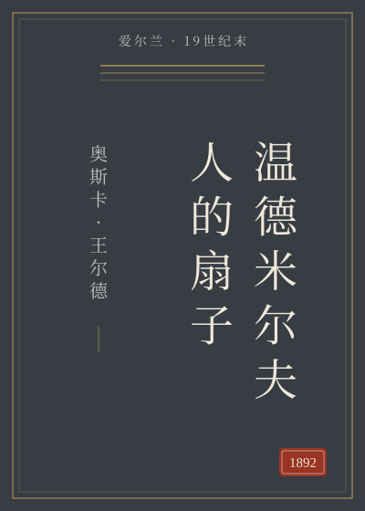
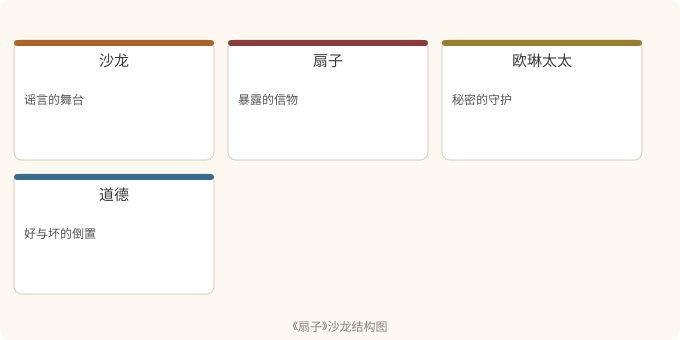

温德米尔夫人的扇子
一、基本信息
| 作者 | 王尔德 |
|---|---|
| 成书/出版 | 1892年（作者页 B132 口径：温德米尔夫人的扇子（1892）） Oscar Wilde — Encyclopaedia Britannica（百科全书） |
| 国别/地区 | 爱尔兰 |
| 时代 | 近代 · 19世纪末 |
| 体裁 | 四幕喜剧 |
| 语言 | 英语 |

《扇子》沙龙结构图（主题·结构图）
二、创作背景
作者页（B132）：王尔德 major_works 载'温德米尔夫人的扇子（1892）'（B132 作者页定位，详见 daolian 条核对）。
题材（通说待核）：怀疑丈夫有染的温德米尔夫人闯入'另一个女人'的沙龙——欧琳太太的秘密。
三、内容脉络
扇子与沙龙：欧琳太太的真实身份（通说待核）。
四、主要人物表
| 人物 | 身份 | 说明 |
|---|---|---|
| 温德米尔夫人 | 妻子 | （通说待核） |
| 欧琳太太 | '坏女人' | 秘密的母亲（通说待核） |
五、主题与艺术特点
- '好女人/坏女人'的道德倒置（通说待核）。
- 上流社会的谣言机制（通说）。
- 王尔德警句（通说）。
六、影响与评论
- 作者页：王尔德戏剧代表作（B132 作者页口径）。
Oscar Wilde — Encyclopaedia Britannica（百科全书） - 作者页：王尔德喜剧谱系（B132 作者级）。
Oscar Wilde — Encyclopaedia Britannica（百科全书）
七、阅读建议
难点
- 上流社会沙龙语境。
- 秘密的翻转。
- 《温德米尔夫人的扇子》（人民文学出版社《王尔德全集》，通说待核）。
- 英文原版（公有领域）。
王尔德喜剧第一站。
八、待核实
- 1892年2月首演（St James's说）核对。
- 温德米尔/欧琳太太人名核对。
- '我们都在阴沟里'警句出处（非本剧）待核。
本页主要来源
王尔德的其他收录作品：道连·格雷的画像